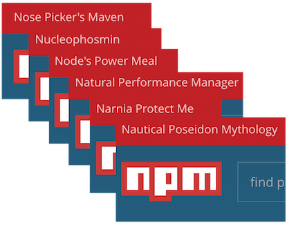
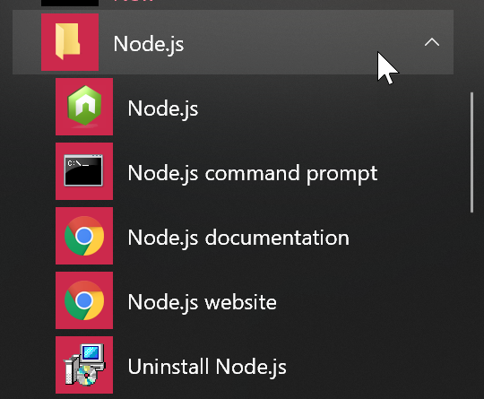
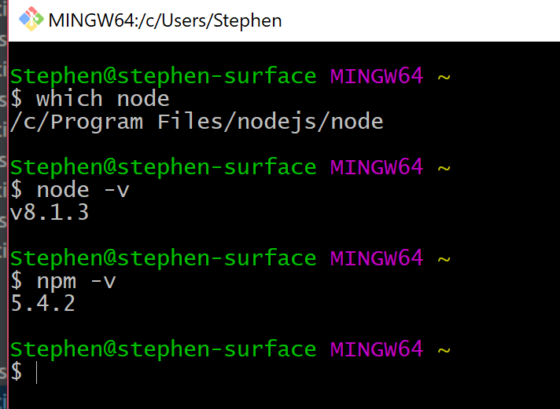

JavaScript
Lingua franca of the webJavaScript's character
Know thy enemy
So - JavaScript! It is a different beast in many ways:
- aloose typing
- bfunctional focus
- cprototypal "inheritance"
At its core, loose typing means the following deal with the devil:
We get extreme power and flexibility, at the cost of tooling.
Although, with TypeScript we can cheat the devil!
Functions are first class citizens in JavaScript, meaning they're a value like any other.
This means it lends itself to functional programming techniques, which are growing evermore popular. We'll come back to those!
Being stuck in an OOP mindframe, we think a lot about inheritance. JavaScript has inheritance of sorts, but between "instances".
But - in JavaScript, inheritance doesn't matter much.
By the way - are you familiar with the 3 levels of programming?

They were interesting, but what do they have to do with JavaScript?
JavaScript's flexible nature encourages and empowers level 2 behaviour.
So take good care, and remember:
With great power comes great responsibility
JavaScript versions
lingua franca of the web
Here is an overview of the different JavaScript versions:

So, just how small is ES7 actually? Err, I mean ES2015.
Well, if you go to https://getgood.at/js/es7-in-7-days...

...then you have 3.5 days to learn this:
myArr.includes('foo') // returns true or false
...and 3.5 days to learn this:
5 ** 3 // 125, same as Math.pow(5, 3)
After ES6 (ES2015), TC39 switched to a yearly release cycle where features compete individually.

The TC39 process:
Formal description here
So what's in the pipe?
- Stage 0 list (16)
- Stage 1-3 (17, 9, 10)
- Stage 4 (7, not counting ES2016)
(counts valid as of April 24th)
Curious what a finished feature spec looks like?
Let's check out the spec for Exponentiation](http://rwaldron.github.io/exponentiation-operator/)
A recommended learning resource if you want to become a nerd are these books by Alex Rauschmayer:
Both are free online. And I've brought paper copies for you to peruse!
Node and NPM
workbench and pantry
In the course we'll rely heavily on
- athe JavaScript runtime Node and
- bthe package manager npm
...so let's touch briefly on both!
Node is mostly associated with running JavaScript on the server, but in actuality it is a JavaScript runtime that can be run anywhere. Some differences versus the in-browser runtime is that
- Node has no DOM
- Node can read and write files
- Node has its own module system
There are two ways to execute JS with Node. We can enter the REPL by typing node in a node terminal...

...or we can execute JavaScript files by typing node myfile.js which executes the JS code in myfile.js.
This of course is the most common usage of Node.
JS developers frequently use Node to run code as part of their build chain.
However, Node is also used for running npm, through which we can download packages from the online repository at https://www.npmjs.com/.
Allegedly npm is an acronym for Node Package Manager, but npm themselves deny that through consistently using lower-case characters, and through the top-left corner of their homepage:

We download packages by
- turning our own code into a package through adding a
package.jsonfile - listing the packages we depend on in that file
- typing
npm installto download all listed dependencies tonode_modules - using those modules in our code!
By having package.json as part of the project, but excluding node_modules, we get a small code repository which can still be easily inflated with dependencies.
And we can still be sure that everyone has the same dependcies.
(...at least if we're careful...)
A downloaded published module will normally look like this:

The package.json file will specify where in the source the entry point is.
So! Node's module system that we mentioned earlier lets us
- import stuff from other files by using
require - export stuff from files by assigning to
module.exports
But now for the beautiful part - we can also require packages from node_modules!
Thus Node and npm together solve both the code modularisation problem along with 3rd party code import problem.
Here's the full truth about how we require stuff:
The important part is to realise that there is no magic involved, and that Node provides us with a convenient way to load...
- core modules (like
fs,http, etc) - 3rd party code (like
angular) - own local modules (like
./src/mycomponent)
Exercise - Install Node
Goal: Have NodeJS installed locally on your machine
Click through the installer.
Make sure to, when given the choice, check that you want to Add Node to path (might be phrased slightly differently).
You'll see that node has installed a few things in the start menu:

All of these are a bit useless, just use node and npm directly.

You are done when...
- typing
node -vin any terminal works
The build step
modern armoury
In modern JS developemt we frequently use a build step:
This takes care of...
- bundling the code into a single file
- transpiling to lower JS versions
- other stuff such as minification, tree shaking, etc
The most common build step tools are Webpack and Browserify.
You'll also hear about people placing configuration in Grunt or Gulp, but the cool kids use npm scripts instead.
We'll talk more about the build step shortly!
For transpiling, the most common solution is Babel:

By default Babel does nothing, we must configure it:
{
"presets": [
"es2015",
"es2016",
"stage-0",
"react"
],
"plugins": [
"transform-regenerator",
"transform-decorators-legacy"
]
}
Objects
bags of data
This section is an overview of objects, in case you need a refresher!
JavaScript has two composite data types, namely objects and arrays!
Althought technically arrays are a special kind of objects, but, never mind.
An object in JavaScript is a collection of key-value pairs, often called a dictionary in other languages.
The property names (keys) are always strings, and the property values can be anything.
We can create an object literal like this:
let myObject = {
someProp: 42,
anotherProp: "hello!"
};
There are two different ways to access a value.
We can use dot notation:
let x = myObject.someProp; // 42
Or we can use bracket notation:
let y = myObject["someProp"]; // 42
Question: The dot notation seems much smoother, so why would we ever want bracket notation?
Answer: That allows us to do dynamic lookups:
let propName = "someProp";
let z = myObject[propName]; // 42
We add a property simply by assigning to it:
let myObject.newProp = 777;
And we delete a property using the delete keyword:
delete myObject.newProp;
If we access a non-existing property we always get undefined.
myObject.bogusProp; // undefined
Contrary to primitives, objects are references, which means that this is false since it is two different objects:
let test = ( {a:1} === {a:1} ); // false
While this is true, since they point to the same object:
let x = {a:1};
let y = x;
let test = x === y; // true
Since objects are references they are always truthy:
if ({}){
console.log("An empty object is truthy!"); // will be shown!
}
We can iterate over objects using a for-in loop:
for (let key in myObject){
console.log(key+" has value "+myObject[key]);
}
Finally: object can contain other objects:
let me = {
name: "David",
address: {
street: "Åsgatan 9",
zip: 27131,
city: "Ystad"
}
}
We can access properties to any depth:
let myZip = me.address.zip;
...although we might have to guard for undefineds:
let myZip = me.address && me.address.zip;
Arrays
Ordered lists
This section is an overview of arrays, in case you need a refresher!
A special kind of objects are arrays, which are an ordered list of values.
You could say that they are objects where the keys are always named 0, 1, 2....
We can create arrays using the array literal notation:
let list = ["tomatoes",42,false];
Since arrays are objects we access elements as before:
let firstItem = list[0]; // "tomatoes"
An array has a length property that tells us how many elements it contains:
list.length // 3
Which means I can pick the last item by doing this:
let lastItem = list[list.length-1]; // false
We can add a new value by calling the push method:
list.push("foobar");
list.length // 4
It is common to iterate using a regular for loop:
for(let i=0; i < list.length; i = i+1){
console.log("Item "+i+" is "+list[i]);
}
There are a whole bunch of array methods - see the MDN reference for a full list:
https://developer.mozilla.org/en-US/docs/Web/JavaScript/Reference/Global_Objects/Array
Question: The length property was rather convenient - is there something similar on regular objects?
Answer: Not directly, but we can get an array of all keys for an object using the keys method of the global Object object:
let keys = Object.keys(myObject); // ["someProp","anotherProp"]
Functions
code in a can
This section is an overview of functions, in case you need a refresher!
There are two different ways to define a function in JavaScript. First as a named function:
function echoer(word,times){
let echo = "";
for(let i = 0; i < times; i = i + 1){
echo = echo + word;
}
return echo;
}
Or as an anonymous function which we can assign to a variable:
let echoer = function(word,times){
let echo = "";
for(let i = 0; i < times; i = i + 1){
echo = echo + word + " ";
}
return echo;
}
Mostly it doesn't really matter which way you choose.
As the example showed, we use return something to return a value. If you just do return;, the returned value is undefined, which it also is if you don't use return at all.
We execute a function by using parens, and listing eventual parameters within those:
let withEcho = echoer("hello",3); // "hello hello hello "
Question: What is the difference between this:
let x = func;
and this:
let x = func();
Answer: Well:
In the first example,
xhas a reference tofunc. Which means that after that, doingx()andfunc()would yield the same thing.In the second example,
xis whateverfuncreturned.
A final observation - There is nothing stopping us from having functions on objects:
myObject.beingAnnoying = function(){
console.log("SPAM!");
};
myObject.beingAnnoying(); // "SPAM!"
When a function is a property on an object it is called a method of that object.
And to end on a meta note; there is also nothing stopping us from having objects (or anything else) on functions, since functions are objects.
let func = function(){};
func.prop = {hello:"world!"};
console.log(func.prop.hello); // "world!"
Exercise - cooking time!
getting functional
Goal: Freshen up our JS skills
Let's have an initial exercise to gauge your JS fu.
We'll throw objects, arrays and functions into the mixer and see what happens!
We'll use Node for this exercise, and play around with a single shop.js file.
Create that file in a folder somewhere, and navigate to it in a terminal!
In that file, define at least 3 recipe objects using different ingredients. They should look like this:
let supersoup = {
potato: 3,
onion: 1,
corn: 1
};
The keys are ingredients, and the values are how many of the ingredient is needed.
Now define a shop object containing all used ingredients as keys and the corresponding price per ingredient as value.
let ICA = {
potato: 12,
tomato: 7,
cucumber: 3,
corn: 5,
// ...
};
Now create a function that calculates the cost for a recipe...
...and try it for a few of them:
console.log("Supersoup costs "+costOfRecipe(supersoup,ICA));
console.log("My famous stew costs "+costOfRecipe(stew,ICA));
To test this, we simply type the following in the terminal:
node shop
...given that
- the name of the file is
shop.js. - we're in the same folder
Exactly like with the previous exercise:
- You may work in teams of up to 3
- Submit the file by putting it in your personal folder in the repo.
Challenge: Too easy? How about this:
- Create a few other shops with different prices
- Collect all shops in a
shopsobject:{ ICA: {...}, coop: {...}, ... };
And THEN:
Create a findCheapestStore function that takes the shops object and a recipe, and tells you which store is the cheapest for that recipe!

Now demonstrate that for a few recipes:
console.log("Cost of stew at ICA", costOfRecipe(stew,ICA));
console.log("Shop for supersoup at", findCheapestStore(supersoup,stores));
You are done when...
- typing
node shopin the terminal showscostOfRecipeworking - ...and
findCheapestStorein case you bit into that one
Functional programming
Jumping down the rabbit hole
JavaScript is a functional language, which modern JS makes frequent use of.
Let's just do a quick sanity check to make sure we're all on the same page!
So - since functions are first class citizens, we can send them around just like any value.
Which also means that a function can take, and/or return, other functions! Such a function is called a higher order function.
As a contrived example, say we have this function:
let spam = function(){
console.log("SPAM!");
}
And then we have this higher order function:
function repeater(func,times){
for(let i = 0; i < times; i = i + 1){
func();
}
}
If we invoke repeater like this:
repeater(spam,3);
We would see this in the console:
"SPAM!"
"SPAM!"
"SPAM!"
To show we can also return new functions, take a look at this beauty:
function multiplier(func,times){
return function(){
for(let i = 0; i < times; i = i + 1){
func();
}
};
}
Did you see the difference? multiplier doesn't execute the parameter function, but returns a new function!
let tripleSpam = multiplier(spam,3);
If we execute the returned function we get the triple spam:
tripleSpam(); // SPAM! SPAM! SPAM!
Functional programming is a really powerful tool, and something that is likely to get you hooked once you have learned it. We warmly encourage you to explore the subject!
Note: the functional paradigm is about much more than just passing functions around, we've really just scratched the surface here.
map, filter and reduce
the cornerstones
For applied functional programming, there are three list-operating tools that have a very central position:
- aThe
mapmethod - bThe
filtermethod - cThe
reducemethod
Let's take a look at these!
First, map. It takes a list and an iterator function as arguments, and returns a new list.

The iterator function that we pass in is called with each element and the index of that element, and it should return a new element to be used instead:

Here's an example. What will this call return?
let list = ["David", "Carl", "Eric"];
let newList = list.map(function(elem){
return elem+"y Mc"+elem+"face";
});
Yup, newList will now equal this:
["Davidy McDavidface","Carly McCarlFace","Ericy McEricface"]
In essence, .map will create a new list of the same length, where each element is individually transformed by the iterator.
Next up is .filter, which is probably the easiest to understand. It has the exact same signature as .map:

The iterator is similar too, except it returns a boolean saying whether or not the element should go into the new array.

Now for .reduce! It is more powerful, but also harder to grasp.
Similar to .map it takes a list and an iterator, but also a seed value. Unlike .map it doesn't necessarily return a list, instead it can return any value.

The iterator function is called with each element and the current value (sometimes called memory or accumulator), and returns a new value.
The seed that we passed in to .reduce is used as the current value for the first iterator call.
The result of the .reduce call is whatever is returned from the last iterator call.
In other words, it looks like this (for a 3-item list):
Here's a code example. What does it return?
let list = ["David", "Carl", "Eric"];
let something = list.reduce(function(mem, elem){
mem[elem.length] = mem[elem.length] || 0;
mem[elem.length]++;
return mem;
}, {})
it returns an object which counts how many words of each length the list contains:
{
4: 2,
5: 1
}
As previously stated, .reduce is hard to grasp but immensely powerful.
A quick proof of that is that it can be used to implement both .map and .filter. So
.reduce is really all we need!
If you slept through the section, here's a popular tweet recap:
Since ES5.1, these methods are available on the array prototype, which somewhat diminishes the need for Underscore/Lodash.
This is a general trend, very similar to the situation with jQuery and the DOM.